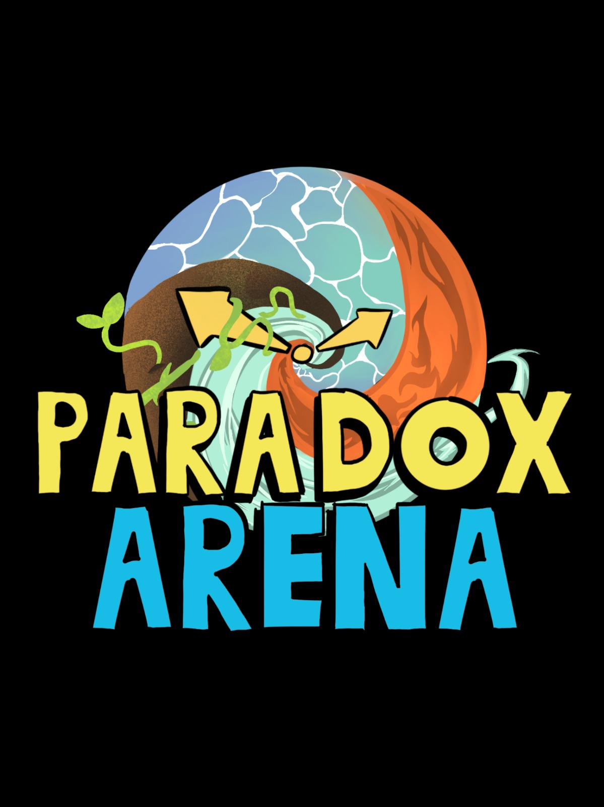
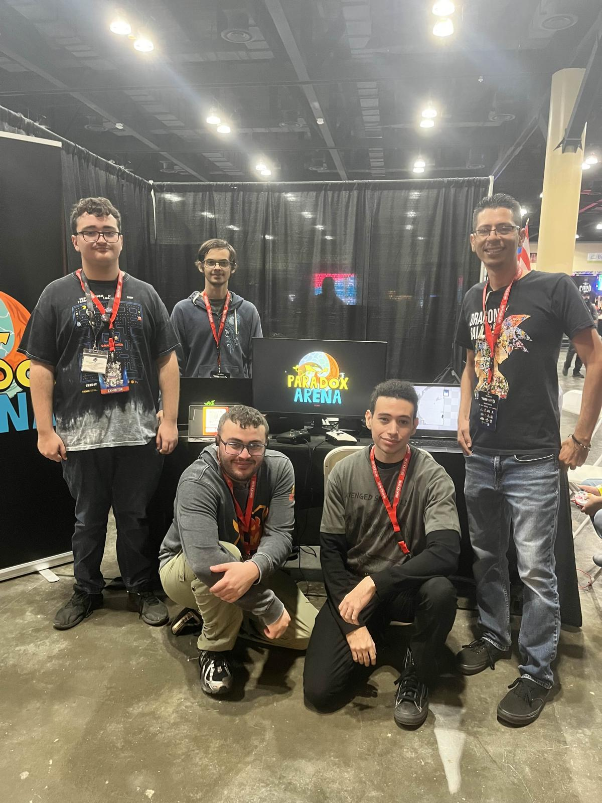
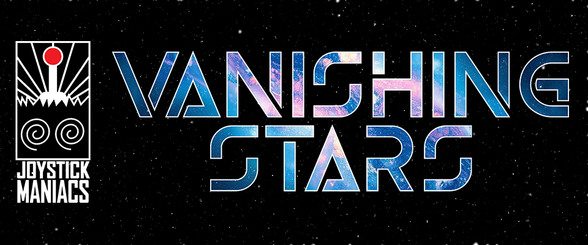
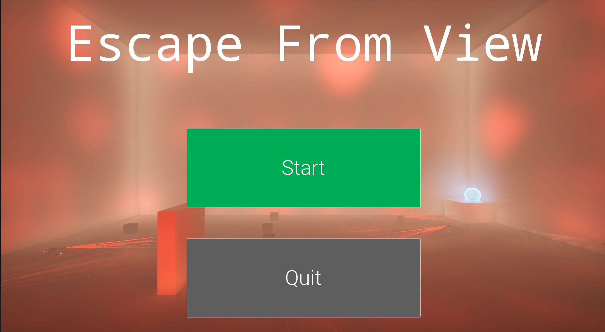
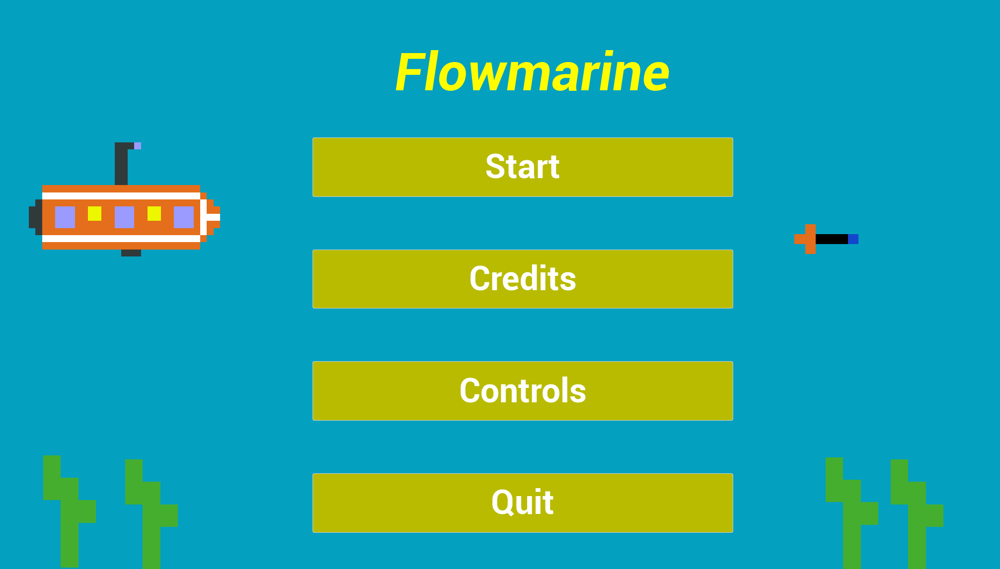

Lead Developer, Game/Character/Systems/Mechanics Design & Programming
Paradox Arena is WIP a Metroidvania inspired 2D platform figther where character movesets are designed to interact with their whole kit.
Current Build: Multiplayer Battles, 6 playable characters, training mode.
Future Plans: Arcade Modes, Singleplayer Mode, More Characters.
Design: Designed characters, stages, gameplay mechanics, game story.
Programming: Implemented core gameplay mechanics/systems and character movesets.
Art: Edited sprites and created custom abilities for characters.
Production: Created design and workflow documents while collaborating with team members utilizing tools such as Github and Trello.


Programmer
Vanishing Stars is an isometric shotter developed by Joystick Maniacs.
Input Manager: Implemented mapping context and input logic.
Damage Systems: Designed health and damage logic systems.
Ui Functionality: Programmed Ui logic such as health display and ability selection indicator.
Character Display: Created characterselect dynamic display scene.
Multiplayer: Implemented multiplayer functionality in gameplay and ui.

Solo Developer
Escape From View is a stealth third person shooter concept where you utilize size changing mechanics to your advantage, shrinking objects and yourself to avoid enemies or enlarging blocks to clear obstacles. Submitted for Tiger Jam 2.
Design: Created level structure and core system mechanics.
Animation: Programmed animations for third person character and edited skeleton for attaching sockets.
Programming: Implemented size changing systems for character, objects and enemies that edited stats as well. Implemented third person mechanics and aiming.
Created Enemy Ai Logic.

Solo Developer
Flowmarine is a relaxing 2D ocean exploration game where you have to get all the coins while avoiding obstacles and unlocking navigation routes. Submitted for What the Jam!? '25.
Art: Created pixel art for enteriety of game.
Programming: Implemented core gameplay mechanics/systems.